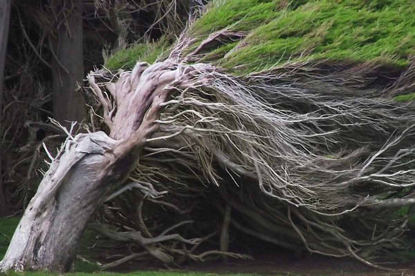

Araucaria (Araucaria araucana)
Es un árbol perenne, de hasta 50 m de altura, con tronco recto, cilíndrico, a veces muy grueso. La ramificación comienza a varios metros del suelo; en los ejemplares más viejos, se dispone en verticilos de 5 ramas que se extienden perpendiculares al tronco; estas ramas son flexibles y tienen acículas agrupadas hacia los extremos.
Crece a más de 800 m.s.n.m., a 1000 m.s.n.m. de manera óptima y llegando hasta los 1700 m.s.n.m.
Lleuque (Prumnopitys andina)
Es un árbol monoico que puede alcanzar los 30 m de altura y con un grosor de más de 2 m, a menudo ramificado desde la base. Tronco liso, corteza delgada, brillante, lisa y de color gris.
Árbol de hojas perennes pequeñas
Crece a los 890 m.s.n.m.
Maqui (Aristotelia chilensis)
Árbol perenne que crece hasta 10 metros de altura. El fruto es considerado un fruto silvestre, sus ramas son abundantes, delgadas y flexibles, en cuanto a sus hojas son simples, opuestas péndulas y ovaladas de color verde y peciolo rojizo.
Crece desde los 2500 m.s.n.m.
Coihue (Nothofagus dombeyi)
Es un árbol frondoso perenne que crece en el centro y sur de Chile, entre las regiones de O'Higgins y Magallanes, desde los 35 a 47° latitud sur y desde el nivel del mar hasta 1200 m s. n. m. de altitud en los Andes.
Raulí (Nothofagus alpina)
Es un árbol monoico (ambos sexos se presentan en la misma especie), caducifolio (especie que pierde sus hojas una parte del año), frondoso, de hasta 45 m de altura y 2 de diámetro.
Crece entre los 900 y 1400 m.s.n.m.
Lenga (Nothofagus pumilio)
Es un árbol de la familia de las Nothofagaceae. Es una especie representativa del bosque andino patagónico del sur de Argentina y de Chile. Crece desde la región del Maule a Magallanes en Chile, abarcando desde los 35 a 56° Lat. S. y desde Neuquén hasta Tierra del Fuego en la Argentina.
Crece entre los 1300 y 1550 m.s.n.m.
Ñirre (Nothofagus antarctica)
El color del follaje es verde medio tornándose amarillo-rojizo en el otoño. La flor es poco llamativa de color amarillo verdoso. El fruto mide 6 mm, es muy fragante. Ñire significa zorro en la lengua mapuche.
De hojas caducas de pequeño tamaño, de hasta 25 metros de altura.
Crece sobre los 1800 m.s.n.m.
Ciprés (Cupressus)
Es una especie conífera que puede alcanzar los 20 m de altura con un diámetro aproximado de unos 60 cm. Su porte es piramidal, de crecimiento rápido en los primeros años de vida, ralentizándose después y pudiendo alcanzar los 300 años de vida.
Roble (Quercus robur)
Es un árbol caducifolio (pierde sus hojas durante una parte del año) que habita los bosques templados de Chile y la Argentina. Crece desde los 33 a 43° latitud Sur. alcanza un tamaño de hasta 50 metros de altura y 2 m de diámetro. Es un árbol que crece en suelos profundos y habitualmente a baja altitud.
Crece entre los 1100 y 1200 m.s.n.m.

Krummholz
Es un tipo de vegetación atrofiada y deformada que se encuentra en paisajes subárticos y subalpinos del límite arbóreo, moldeada por la exposición continua a fuertes vientos helados.
Con una velocidad constante de 27 a 36 km/h basta para provocar una reducción en tamaño de las hojas y la longitud de los entrenudos, a los 70 km/h, el crecimiento del árbol es detenido casi por completo e incluso puede ser suficiente para matarlo.
Líquenes
Son organismos formados por la unión de un hongo y un organismo fotosintético. Crecen entre los 2000 y los 2600 m.s.n.m.
Colihue (Chusquea culeou)
Es una planta arbustiva perenne, perteneciente a la subfamilia de los bambúes. Crece en zonas húmedas de los bosques templados del suroeste de Argentina y del sur de Chile. Sus hojas son lanceoladas, cubiertas de pelos y con una pequeña espina en la punta. Su flor es una panoja de color castaño y su fruto una cariopsis comestible.


{kind=link}
{kind=link}
{kind=link}
{kind=link}
{kind=link}
{kind=link}
{kind=link}
{kind=link}
{kind=link}
{kind=link}
{kind=link}
{kind=link}